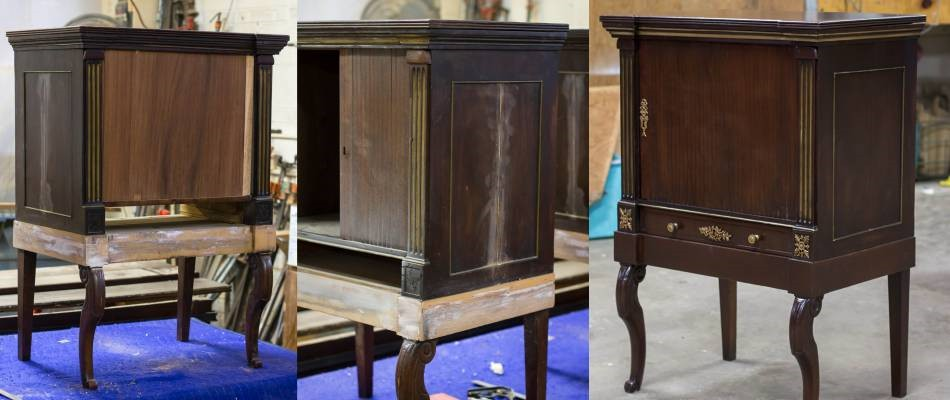
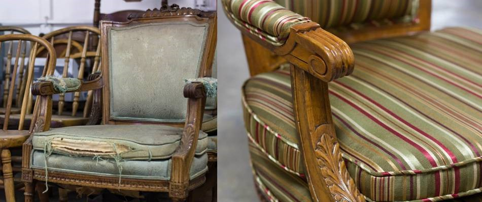
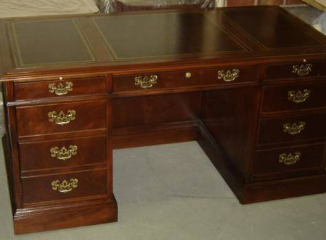
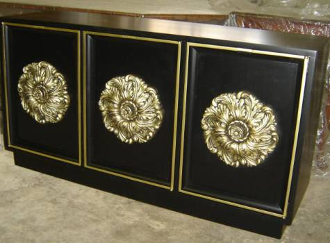

Furniture Restoration


Whether you purchased the piece brand new, found it at an antique mall, or were gifted it by grandma, there's one thing furniture owners want: a nice, quality piece. Regardless of how you invested in your furniture pieces, it makes sense to want the best from them, which is structural stability and beautiful design. Ablyss offers furniture restoration services so that every furniture piece you find has a second chance at a quality life.
Is Furniture Restoration Worth It?
There are many reasons to consider furniture restoration, and why we are proponents of repairing and restoring pieces you already own or love.
The piece has sentimental value. A hand-me-down piece from a family member can work beautifully - and look great, too - within your home thanks to restoration services.
The piece is one-of-a-kind. If your home features a particular style or theme, or focuses on antique or vintage pieces, furniture restoration is a less expensive option to buying costly mint condition pieces. In the end, you'll get the same results for less.
You can't find another piece that fits your vision or budget. There's nothing wrong with knowing exactly what kind of furniture you want in your home - but it can be difficult to find specific pieces that match your current outdated furniture. By choosing furniture restoration, you can improve the look of your home and save countless hours of searching for a similar piece.
What's Involved in Furniture Restoration?
Furniture restoration takes into account damage already done to your furniture piece while considering ways to maintain or return the piece to its original style. In many cases, furniture restoration begins with repairing broken pieces or remanufacturing missing pieces. At Ablyss, we recreate replica pieces for broken or missing parts to ensure your furniture piece is authentic.
Following the repair process, pieces are refinished and reupholstered, allowing them to be brought out once again for daily use and enjoyment.


Our Furniture Restoration Services
At Ablyss, our goal is to work with every client to find the best balance of appropriate restoration and original preservation - not to mention your particular vision for the item. With these items in mind, our furniture restoration team is skilled at completing stunning restoration projects that add new life and value to your furniture. Some of the furniture restoration services we offer include:
Repair of broken pieces
Remanufacture of broken or missing pieces
Finish stripping and reapplication
Finish preservation and sealing
Reupholstery
And more
Ablyss can restore countless of furniture items, including:
Chairs, couches and love seats
Tables and dining sets
Nightstands
Dressers, chests and wardrobes
End tables and coffee tables
Pianos
Children's furniture
And more
Why Consider Us for Furniture Restoration in Denver, Colorado?
Ablyss furniture restoration services are focused on producing beautiful results that extend the lifetime of your furniture while focusing on quality craftsmanship. We use the best techniques in the restoration industry to ensure that your furniture investment retains - or gains - value during the restoration and repair process. Are you considering a furniture restoration project?
Contact us on 303.935.0949 for ways we can help.